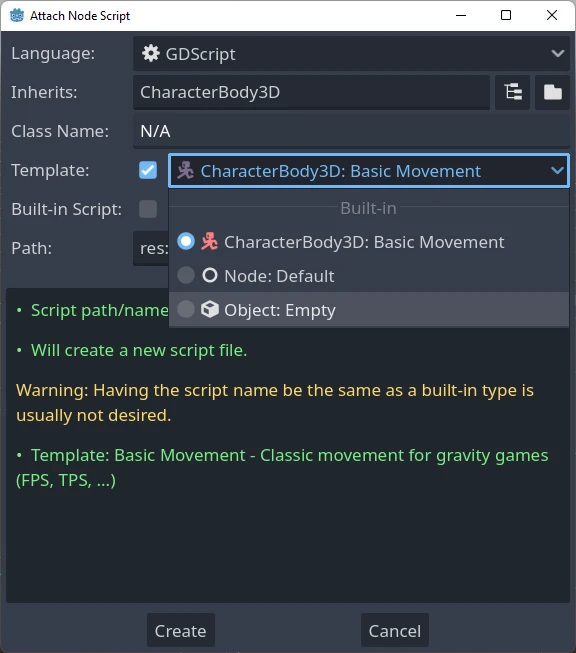
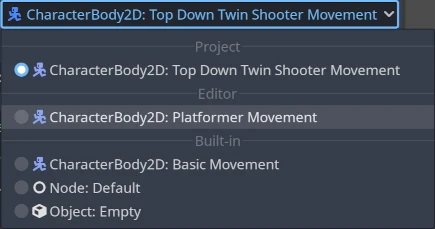

Tạo script template
Godot cung cấp cách sử dụng script template như bạn thấy trong Script Create Dialog khi tạo một script mới:

Trình chỉnh sửa đi kèm sẵn một bộ script template có sẵn, nhưng bạn cũng có thể tạo template mới và đặt chúng làm mặc định, cả ở phạm vi dự án lẫn phạm vi trình chỉnh sửa.
Template được gắn với một loại node cụ thể, nên khi tạo script bạn sẽ chỉ thấy các template tương ứng với node đó hoặc một trong các kiểu cha của nó. Ví dụ, nếu bạn tạo script cho một CharacterBody3D, bạn sẽ chỉ thấy các template được định nghĩa cho CharacterBody3D, Node3D hoặc Node.
Vị trí của các template
Có hai nơi để quản lý template.
Template do trình chỉnh sửa định nghĩa
Các template này dùng được ở mọi dự án. Vị trí của chúng phụ thuộc vào từng hệ điều hành:
Windows:
%APPDATA%\Godot\script_templates\Linux:
$HOME/.config/godot/script_templates/macOS:
$HOME/Library/Application Support/Godot/script_templates/
Nếu bạn tải Godot từ nguồn khác ngoài trang web chính thức, chẳng hạn Steam, thư mục này có thể nằm ở vị trí khác. Bạn có thể tìm nó bằng trình chỉnh sửa Godot: vào Editor > Open Editor Data/Settings Folder, một thư mục sẽ mở ra trong trình quản lý tệp, và bên trong đó là thư mục script_templates.
Template do dự án định nghĩa
Đường dẫn mặc định để tìm template là thư mục res://script_templates/. Bạn có thể thay đổi đường dẫn này bằng cách cấu hình cài đặt dự án Editor > Script > Templates Search Path, bằng code hoặc qua trình chỉnh sửa.
Nếu dự án không có thư mục script_templates, nó sẽ đơn giản bị bỏ qua.
Tổ chức và đặt tên template
Cả template của trình chỉnh sửa lẫn của dự án đều được tổ chức theo cách sau:
template_path/node_type/file.extension
trong đó:
template_pathlà một trong 2 vị trí đã nêu ở hai phần trước.node_typelà node mà template sẽ áp dụng (ví dụ Node hoặc CharacterBody3D). Tên này phân biệt chữ hoa chữ thường. Nếu script không nằm trong đúng thư mụcnode_type, nó sẽ không được nhận diện.filelà tên tùy chọn bạn đặt cho template (ví dụplatformer_movementhoặcsmooth_camera).extensioncho biết template áp dụng cho ngôn ngữ nào (gdcho GDScript hoặccscho C#).
Ví dụ:
script_templates/Node/smooth_camera.gdscript_templates/CharacterBody3D/platformer_movement.gd
Hành vi mặc định và cách ghi đè
Theo mặc định:
tên của template giống tên tệp (bỏ phần mở rộng và được định dạng lại cho dễ đọc)
phần mô tả để trống
thụt lề bằng 4 dấu cách
template sẽ không được đặt làm mặc định cho node tương ứng
Bạn có thể tùy chỉnh hành vi này bằng cách thêm các meta header ở đầu tệp, như sau:
# meta-name: Platformer movement
# meta-description: Predefined movement for classical platformers
# meta-default: true
# meta-space-indent: 4
// meta-name: Platformer movement
// meta-description: Predefined movement for classical platformers
// meta-default: true
// meta-space-indent: 4
Trong trường hợp này, tên sẽ là "Platformer movement", kèm phần mô tả tùy chỉnh đã cho, và template sẽ được đặt làm mặc định cho node ứng với thư mục chứa nó.
Đây là ví dụ sử dụng template tùy chỉnh ở cấp trình chỉnh sửa và cấp dự án:

Ghi chú
Script template có cùng phần mở rộng với các tệp script thông thường. Điều này có thể khiến trình phân tích script coi các template là script thật trong dự án. Để tránh việc này, hãy cho thư mục chứa chúng bị bỏ qua bằng cách tạo một tệp .gdignore rỗng. Thư mục sẽ không còn hiển thị trong hệ thống tệp của dự án, nhưng bạn vẫn có thể chỉnh sửa template bằng trình soạn thảo văn bản bên ngoài bất cứ lúc nào.
Mẹo
Theo mặc định, mọi tệp C# trong thư mục dự án đều được đưa vào quá trình biên dịch. Script template phải được loại trừ thủ công khỏi dự án C# để tránh lỗi build. Xem Exclude files from the build trong tài liệu của Microsoft.
Bạn có thể tạo template cấp trình chỉnh sửa ngang cấp với template riêng của dự án, và cũng có thể trùng tên với một template có sẵn; tất cả đều sẽ hiển thị trong hộp thoại tạo script mới.
Template mặc định
Để ghi đè template mặc định, hãy tạo một template tùy chỉnh ở cấp trình chỉnh sửa hoặc cấp dự án bên trong thư mục Node (hoặc một kiểu cụ thể hơn, nếu chỉ muốn ghi đè cho một kiểu con) và bắt đầu tệp bằng header meta-default: true.
Tại một thời điểm, mỗi loại node chỉ có thể có một template mặc định.
Các template Default cho Node cơ bản, cả GDScript và C#, được trình bày dưới đây để bạn dùng làm nền tảng tạo các template khác:
# meta-description: Base template for Node with default Godot cycle methods
extends _BASE_
# Called when the node enters the scene tree for the first time.
func _ready() -> void:
pass # Replace with function body.
# Called every frame. 'delta' is the elapsed time since the previous frame.
func _process(delta: float) -> void:
pass
// meta-description: Base template for Node with default Godot cycle methods
using _BINDINGS_NAMESPACE_;
using System;
public partial class _CLASS_ : _BASE_
{
// Called when the node enters the scene tree for the first time.
public override void _Ready()
{
}
// Called every frame. 'delta' is the elapsed time since the previous frame.
public override void _Process(double delta)
{
}
}
Trình chỉnh sửa Godot cung cấp sẵn một bộ template hữu ích dành riêng cho từng node, chẳng hạn basic_movement cho cả CharacterBody2D và CharacterBody3D, và plugin cho EditorPlugin.
Danh sách placeholder của template
Dưới đây là danh sách đầy đủ các placeholder có sẵn của template hiện đã được triển khai.
Placeholder cơ bản
Placeholder |
Mô tả |
|---|---|
|
Tên namespace của Godot (chỉ dùng trong C#). |
|
Tên của lớp mới. |
|
Tên của lớp mới ở dạng |
|
Kiểu cơ sở mà script mới kế thừa. |
|
Placeholder thụt lề. Loại và số ký tự khoảng trắng dùng để thụt lề lần lượt được xác định bởi các cài đặt |
Placeholder kiểu
Trong Godot 3.x từng có các placeholder cho type hint của GDScript, được thay thế mỗi khi dùng template để tạo script mới, chẳng hạn: %INT_TYPE%, %STRING_TYPE%, %FLOAT_TYPE% hoặc %VOID_RETURN%.
Các placeholder này không còn hoạt động trong Godot 4.x, nhưng nếu cài đặt text_editor/completion/add_type_hints trong EditorSettings bị tắt, type hint cho tham số và kiểu trả về sẽ tự động bị loại bỏ đối với một số kiểu cơ bản:
intStringArray[String]floatvoid:=sẽ được chuyển thành=